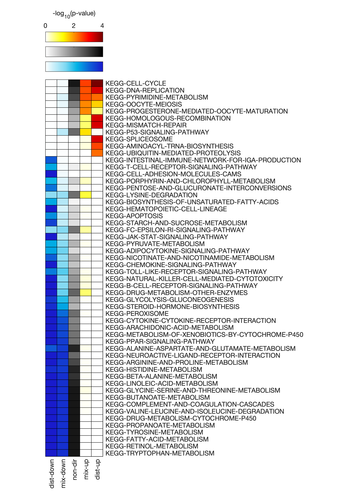

GSAM User Guide
The following examples demonstrate the use of the GSAM package for common analysis scenarios.
The data files used for these examples can be retrieved from the data/ directory on the associated documentation repository. If you wish you run these examples yourself, first download the files in that directory to your local machine and ensure that they are on your current MATLAB path.
Example 1: Single GSA, Liver hepatocellular carcinoma
Load the data and gene set collection file
Load the differential expression (DE) results for hepatocellular carcinoma (LIHC) (paired-normal tissue vs. primary tumor tissue).
DEdata = readtable('DEresults_LIHC.txt');
Take a look at the table contents.
head(DEdata)
% ans =
%
% 8×4 table
%
% gene_IDs gene_names logFC PValue
% ___________________ ____________ __________ __________
%
% {'ENSG00000000003'} {'TSPAN6' } -0.26345 0.050906
% {'ENSG00000000419'} {'DPM1' } -0.0030857 0.97084
% {'ENSG00000000457'} {'SCYL3' } 0.044663 0.63024
% {'ENSG00000000460'} {'C1orf112'} 0.7297 0.00021919
% {'ENSG00000000938'} {'FGR' } -1.2409 3.6644e-15
% {'ENSG00000000971'} {'CFH' } -0.72639 0.00069828
% {'ENSG00000001036'} {'FUCA2' } 0.050749 0.66557
% {'ENSG00000001084'} {'GCLC' } -0.60349 1.1461e-06
Extract the data into individual variables
geneIDs = DEdata.gene_IDs; % gene Ensembl IDs
geneNames = DEdata.gene_names; % gene abbreviations
log2FC = DEdata.logFC; % log2(fold-changes) (normal vs. tumor)
pvals = DEdata.PValue; % fold-change significance (p-values)
Load the KEGG_GSC.gmt gene set collection (GSC) file using the importGSC function, and look at the first few lines to see how it's formatted.
gsc = importGSC('KEGG_GSC.gmt');
% Gene set collection contains 146 gene sets and 4966 unique genes.
gsc(1:5,:)
% ans =
%
% 5×2 cell array
%
% {'KEGG-GLYCOLYSIS-GLUCONEOGENESIS'} {'ACSS2'}
% {'KEGG-GLYCOLYSIS-GLUCONEOGENESIS'} {'GCK' }
% {'KEGG-GLYCOLYSIS-GLUCONEOGENESIS'} {'PGK2' }
% {'KEGG-GLYCOLYSIS-GLUCONEOGENESIS'} {'PGK1' }
% {'KEGG-GLYCOLYSIS-GLUCONEOGENESIS'} {'PDHB' }
Note
The KEGG_custom_GSC.gmt file used in this example is a modified version of the KEGG gene set collection retrieved from MSigDB, where all disease-related gene sets were removed.
Run the gene set analysis
Run the gene set analysis using the geneSetAnalysis function.
GSAres = geneSetAnalysis(geneNames, pvals, log2FC, gsc, 'Wilcoxon', 50000, [20, Inf]);
% Gene set collection contains 146 gene sets and 4966 unique genes.
% Checking for empty gene sets... Removed 0 empty sets.
% Checking for duplicated rows in GSC... Removed 0 duplicated rows.
% Checking gene set sizes... Removed 27 gene sets not satisfying size limits.
% Final number of gene sets remaining: 119
% Subsetting data for mixed-directional calculations... Done.
% Calculating test statistic... Done.
% Calculating significance via gene shuffling... Done.
Here, we chose the Wilcoxon rank-sum test as the method for combining gene-level statistics, set the number of permutations for significance calculation to 50000, and excluded gene sets that contained less than 20 genes.
Important
We used geneNames (instead of e.g. geneIDs) as input to the geneSetAnalysis function because gene names are used in the gsc that was loaded. It is important that the gene names or IDs in the gene list are of the same type as those used in the GSC file.
View and/or export the results
The results are returned as the GSAres table, which contains information about the size (number of genes) and significance (p-values, raw and adjusted) for each of the evaluated gene sets. The table can be viewed by double-clicking on GSAres in the Workspace, or using the open function.
open('GSAres');
| GS_name | GS_size | stat_nondir | p_nondir | padj_nondir | stat_mixup | p_mixup | padj_mixup | stat_mixdn | p_mixdn | padj_mixdn | stat_distup | p_distup | padj_distup | stat_distdn | p_distdn | padj_distdn |
|---|---|---|---|---|---|---|---|---|---|---|---|---|---|---|---|---|
| KEGG-GLYCOLYSIS-GLUCONEOGENESIS | 51 | 519848 | 0.0102 | 0.0371 | 62259 | 0.5766 | 0.8788 | 196844 | 0.0018 | 0.0092 | 302878 | 0.9998 | 1 | 571415 | 0.00018 | 0.00067 |
| KEGG-CITRATE-CYCLE-TCA-CYCLE | 30 | 294717 | 0.0832 | 0.1799 | 44790 | 0.3987 | 0.8041 | 101736 | 0.0759 | 0.1966 | 200384 | 0.9817 | 1 | 313906 | 0.0183 | 0.0496 |
| KEGG-PENTOSE-PHOSPHATE-PATHWAY | 21 | 198224 | 0.2115 | 0.3872 | 47870 | 0.2579 | 0.6929 | 51476 | 0.3019 | 0.5239 | 176522 | 0.5622 | 1 | 183481 | 0.4379 | 0.6596 |
| KEGG-PENTOSE-AND-GLUCURONATE-INTERCONVERSIONS | 21 | 189170 | 0.3415 | 0.5080 | 8507 | 0.8360 | 0.9871 | 84792 | 0.2356 | 0.4344 | 103850 | 0.9998 | 1 | 256153 | 0.0002 | 0.0007 |
| KEGG-FRUCTOSE-AND-MANNOSE-METABOLISM | 32 | 278495 | 0.4365 | 0.6076 | 74220 | 0.2803 | 0.6948 | 65609 | 0.6202 | 0.8317 | 283091 | 0.3800 | 1 | 265485 | 0.6201 | 0.8580 |
| ... | ... | ... | ... | ... | ... | ... | ... | ... | ... | ... | ... | ... | ... | ... | ... | ... |
The tabular format of the GSA results can often be difficult to interpret. A more intuitive way to visualize the results is to use a heatmap. Generate a heatmap to visualize GSAres using the GSAheatmap function.
GSAheatmap(GSAres, true, 'pval', 0.01);

Here, we chose to use the adjusted gene-set p-values (as specified with the second input true), and filtered the gene sets to only show those with an adjusted p-value ≤ 0.01 for at least one of the five directionality types.
Note
For more information on the meaning and interpretation of the different p-value classes (distinct directional down and up, mixed-directinal down and up, and non-directional), see the publication where they were introduced.
Alternatively, the results can be written to a file.
writetable(GSAres,'GSAresults.txt','Delimiter','\t'); % export to tab-delimited .txt file
writetable(GSAres,'GSAresults.csv','Delimiter',','); % export to comma-delimited .csv file
Example 2: Using gene set collections derived from GEMs
Genome-scale metabolic models (GEMs) are convenient collections of all known reactions comprising the metabolism of an organism or cell type. Since most GEMs contain gene information, we can extract gene set collections from the associations of these genes with other model components, such as metabolites or subsystems (pathways).
Load the GEM and extract some GSCs
For this example, we will use a human genome-scale metabolic model, Human-GEM. A .mat version of the model can be retrieved from the Human-GEM GitHub repository.
Once the HumanGEM.mat file is downloaded and added to the current working folder (or somewhere else on the MATLAB path), load it into MATLAB.
load('HumanGEM.mat'); % the model is loaded as a structure named 'ihuman'
Extract a metabolite-based GSC from the model using the extractMetaboliteGSC function.
gsc_met = extractMetaboliteGSC(ihuman);
% Gene set collection contains 3715 gene sets and 3625 unique genes.
Just as other GSCs (such as the KEGG collection described above) associate biological functions or processes to sets of genes, the metabolite GSC associates metabolites to sets of genes. This provides a convenient link between gene-level information and metabolism.
Run a GSA with the same LIHC DE data as in Example 1 above, but now using the metabolite GSC gsc_met. We will also change the gene set size limits to exclude metabolites associated with more than 200 genes, and use the "Reporter" method for combining gene-level statistics.
GSAres = geneSetAnalysis(geneIDs, pvals, log2FC, gsc_met, 'Reporter', 50000, [20, 200]);
% Checking for empty gene sets... Removed 71 empty sets.
% Checking for duplicated rows in GSC... Removed 0 duplicated rows.
% Checking gene set sizes... Removed 3236 gene sets not satisfying size limits.
% Final number of gene sets remaining: 408
% Subsetting data for mixed-directional calculations... Done.
% Calculating test statistic... Done.
% Calculating significance via gene shuffling... Done.